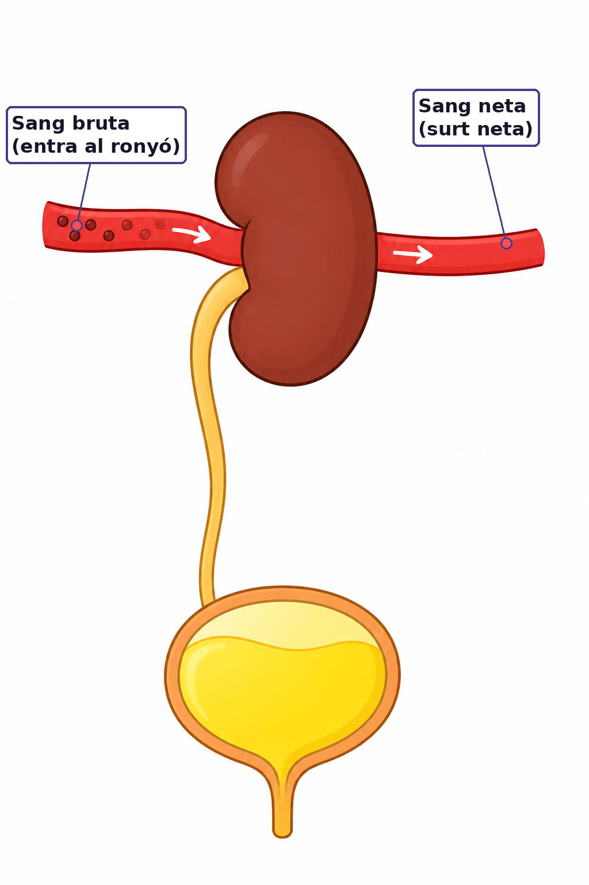
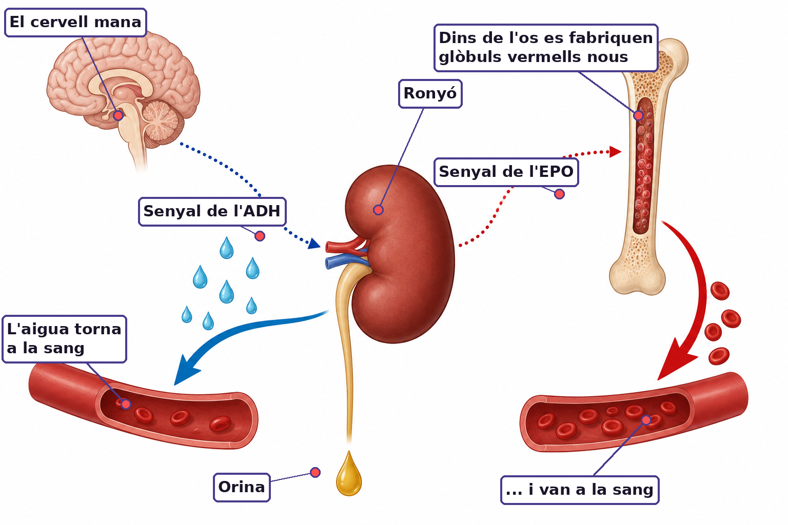

Esbossa un cos i marca per on creus que el cos elimina la urea, les sals i l'aigua que sobren. Al final ho compararàs amb el model real.
El CO₂ ja saps per on surt: pels pulmons. Però quan les teves cèl·lules treballen també fan altres residus (urea, sals, excés d'aigua). Per on creus que surten del cos?
Dades amb finalitat didàctica. Fixa't en les dues files noves: urea i creatinina (els residus que filtra el ronyó).
| Paràmetre | Valor del Marc | Valors normals | Què mesura |
|---|---|---|---|
| Glucosa | 88 mg/dL | 70 – 100 | energia de les cèl·lules |
| Hemoglobina (Hb) | 9,2 g/dL | 13 – 17 | transporta l'O₂ → poca = anèmia |
| Ferritina | 8 ng/mL | 30 – 400 | reserva de ferro del cos |
| Urea | 32 mg/dL | 17 – 49 | residu de les proteïnes — el filtra el ronyó |
| Creatinina | 0,9 mg/dL | 0,7 – 1,3 | residu del múscul — diu si el ronyó filtra bé |
① Classifica cada paràmetre en «normal» o «alterat» i digues quin òrgan o procés vigila cadascun.
② La urea i la creatinina (residus que filtra el ronyó) són normals, però la Hb i la ferritina són baixes. Argumenta quin és el diagnòstic més probable i per quina raó descartes un problema de ronyó.

Quan les cèl·lules respiren i fan servir les proteïnes, generen residus que aboquen a la sang: sobretot urea (de les proteïnes), més l'excés de sals i d'aigua. Si s'acumulen, enverinen el medi intern. El ronyó actua de filtre: deixa passar el que sobra cap a l'orina i retorna a la sang el que encara és útil (glucosa, proteïnes, la major part de l'aigua). Així manté estable el medi intern: és l'homeòstasi.
Un colador deixa passar tot el que és petit. El ronyó, en canvi, recupera coses petites i útils (glucosa, gairebé tota l'aigua) i només deixa marxar els residus. Explica per quina raó és important que el filtre sigui selectiu i no un simple colador.
L'eliminació de residus està repartida: els pulmons expulsen el residu gasós, el CO₂ (que ve de la respiració cel·lular); el ronyó expulsa els residus líquids: urea, sals i excés d'aigua. Tots dos, junts, mantenen estable la composició de la sang.
Argumenta com els pulmons (CO₂) i el ronyó (urea, sals, aigua) constitueixen un sistema coordinat d'eliminació. Relaciona-ho amb la respiració cel·lular: d'on surten aquests residus?

El ronyó no treballa sol: rep ordres hormonals. Quan falta aigua al cos, el cervell allibera l'ADH, que fa que el ronyó retingui aigua i concentri l'orina (poca i fosca). Quan en sobra, baixa l'ADH i fas molta orina clara. Així el ronyó ajusta l'aigua del cos minut a minut: torna a ser homeòstasi.
Has fet 90 minuts d'esport sense beure. Explica, pas a pas, què detecta el cos, què fa l'ADH i com queda la teva orina. Acaba amb la paraula homeòstasi.
El ronyó fabrica l'EPO, l'hormona que ordena la producció d'eritròcits. Construeix la cadena EPO → eritròcits → hemoglobina → O₂ → músculs i argumenta per quina raó una malaltia renal pot causar anèmia i fatiga, encara que la dieta tingui prou ferro.
Repte final — torna al Marc Fontana: la seva urea i creatinina són normals. El seu problema, és del ronyó o del ferro? Justifica-ho.
Durant un dia, observa la relació entre el que beus i la teva orina (color i quantitat). Apunta-ho aquí:
| Moment del dia | He begut molt / poc? | Color de l'orina (clara / mitjana / fosca) | He orinat? (sí/no) |
|---|---|---|---|
| Al llevar-te | |||
| Migdia | |||
| Tarda | |||
| Abans de dormir |
Quina conclusió en treus sobre com el teu ronyó regula l'aigua del cos?
Relaciona les teves dades amb l'ADH: en quins moments creus que tenies més ADH a la sang? Per quina raó?
⚠️ Porta aquesta fitxa a la Sessió 7. ⏱️ 1 min cada cop · No es pot fer amb IA: són observacions teves del teu propi cos.